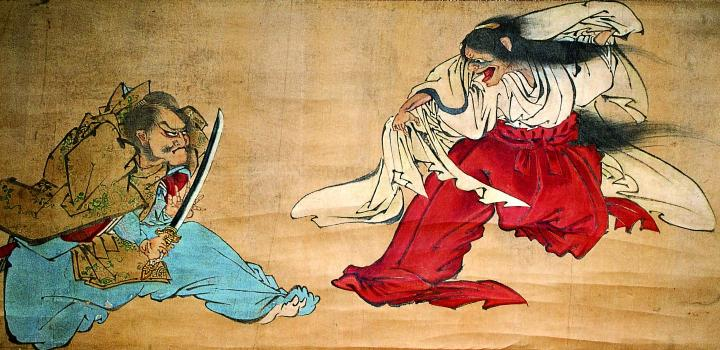

← 图鉴索引

緋袴をはいた巫女。頭には角が生えており、鬼のような形相である。刀を持った男と対峙している。
出典：親書誌：A5_pushkin_0069：（狂巫女退治図；キョウミコタイジノズ）／日付：2011／資源識別子：A5_pushkin_0069_0001_0000
Copyright (c)2010- International Research Center for Japanese Studies, Kyoto, Japan. All rights reserved.